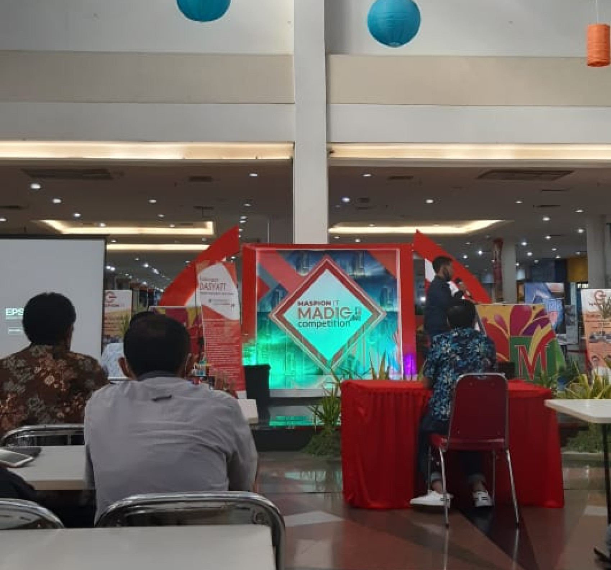

Maspion It merupakan sponsor utama dalam perlombaan majalah digital atau disingkat menjadi MADIG, dalam perlombaan ini diikuti oleh siswa siswi SMK dengan total 136 tim yang telah mendaftar. Pada tanggal 21 November 2020 para peserta datang ke atrium Maspion Square untuk mempresentasikan konsep MADIG yang telah dibuat oleh timnya.

“Harapannya adalah memunculkan anak anak yang luar yang kreatif mengikuti eranya yaitu era digital karena disini adalah tempat ajang kumpulnya anak kreatif. Dimana memang sebagai ikon IT Indonesia Maspion IT itu menangkap segala macam aspirasi bagi anaka anak muda khususnya di Indonesia” ucap Bapak Ir. Okky Tri Hutami pengagas kompetisi Majalah Digital yang dilansir dari acara televisi Warna Warni Kota Surabaya TV. Pak Okky sebagai salah satu juri dalam Kompetisi MADIG ini bangga kepada para peserta karena ide ide yang mereka gagas dan mereka presentasikan, pihak Maspion IT juga berharap banyak kepada siswa siswi SMK menjadi IT entrepreneur yang bisa mengembangkan teknologi digital di Indonesia
|  | Maspion IT mendukung sumber daya manusia dengan mengadakan kompetisi kompetisi yang mengasah kreatifitas generasi kini agar bisa memajukan Indonesia kedepannya terutama dalam bidang IT. |
Sumber gambar: Surabaya TV